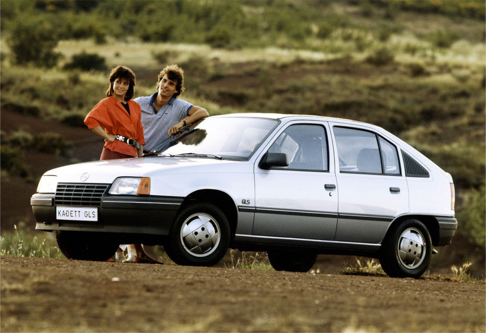
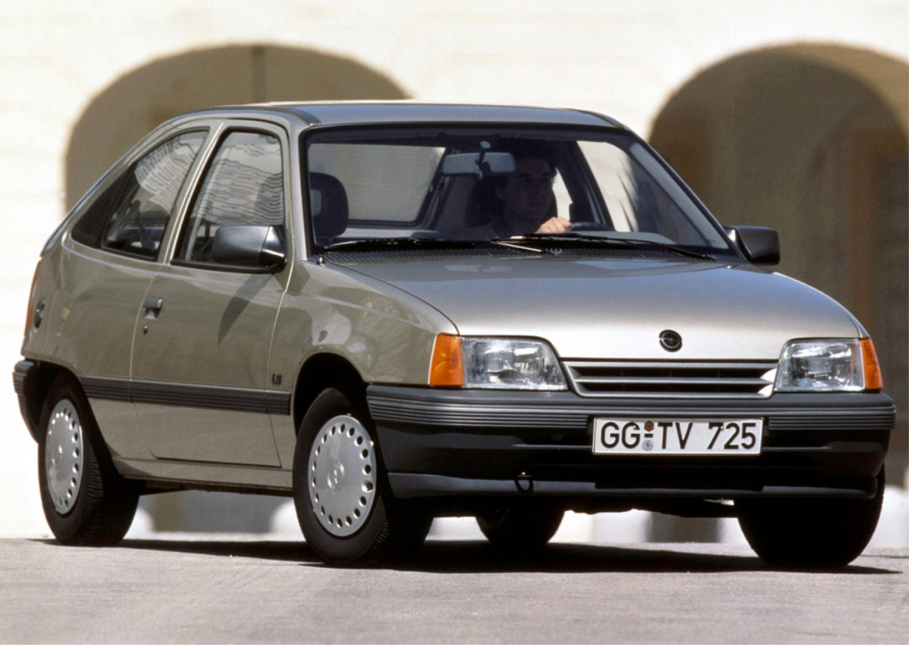

Opel Tuning
Opel Kadet
Hello about Opel Kadet
Kadett E (1984–1995) The Kadett E (Vauxhall Astra Mark 2 in the United Kingdom) was introduced in August 1984, and was voted the 1985 European Car of the Year.
[25][26] The 1984 model was also developed into a more conventional three-box design with a boot (trunk),
badged as the Vauxhall Belmont in the United Kingdom, launched at Frankfurt 1985.
This was awarded the 1985 Semperit Irish Car of the Year in Ireland. There was a station wagon called the "Caravan",
available with either three or five doors. In South Africa, the Kadett notchback was sold as the Opel Monza, along with a convertible.
[27] This replaced the Opel Ascona.[28]
 |
The car was noted for its advanced aerodynamics and distinctive "teardrop" shape - mirroring the trend in the mid 1980s for
swooping aerodynamic styling - with the front end styling taken directly from the Opel Tech 1 concept car of 1981,
although some styling cues from the Kadett D were retained for continuity such as its 'Kamm tail' and oversized C-pillar extraction vent.
